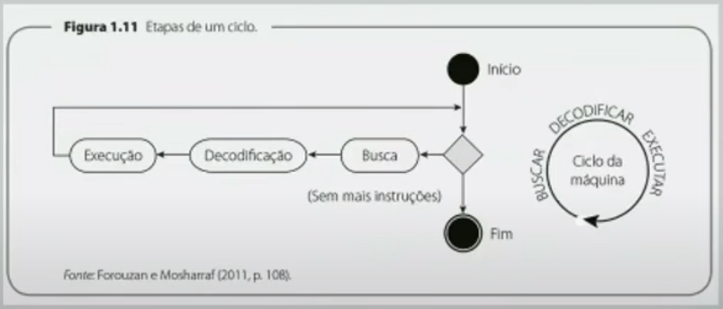
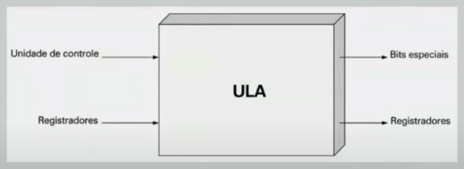
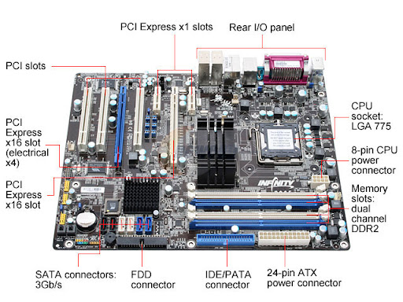
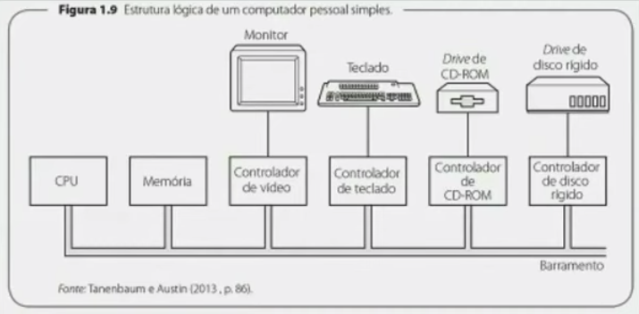

Disciplinas
-
SISTEMAS COMPUTACIONAIS. Concluído
Materiais
Vídeo 2 - Sistemas Computacionais - Unidade Central de Processamento - CPU. sendProf° ministrante: Alessandra Alaniz Macedo.
Conteúdo
Sistemas Computacionais.
Unidade Central de Processamento - CPU.
UNIDADE CENTRAL DE PROCESSAMENTO - CPU.
- A CPU é o "cérebro" do computador
- executa programas armazenados na memória principal, buscando, examinando e executando, em sequência, suas instruções
- controla os componentes e seus subsistemas
PARTES DA CPU.
- Unidade de controle
- comanda o funcionamento de cada subsistema
- busca instruções na memória principal e determina seu tipo
- Unidade Lógica e Aritmética (ULA)
- efetua operações matemáticas para executar as instruções
- Registrador
- é uma pequena memória de alta velocidade para armazenar resultados temporários e algum controle de informações
REGISTRADORES.
- Tem determinada função
- São locais de armazenamento rápido
- Guardam dados temporariamente
- Podem ser lidos e escritos em alta velocidade
- Tipos de registradores
- Contador de programa - indica a próxima instrução a ser buscada para a execução
- Registrador de instrução - mantém a instrução que está sendo executada
- Registrador de dados - mantém os dados de entrada, os resultados intermediários e os resultados finais
CICLOS DE MÁQUINA
UNIDADE LÓGICA E ARITMÉTICA
- Faz adição, subtração e outras operações com as entradas, gerando resultado no registrador de saída. A ULA tem 3 tipos de operação:
- Operações lógicas - tratam a entrada de dados e saídas como binários
- Operações aritméticas - realizam as operações básicas (adição, subtração, divisão e multiplicação) e outras simples
- Operações de deslocamento - são de 2 grupos:
- Deslocamento lógico: desloca binários para a esquerda ou direita
- Deslocamento aritmético: aplicado a números inteiros para dividir ou multiplicar esses números por dois
ULA
ENTRADA E SAÍDA (E/S).
- São dispositivos que inserem de fonte externa ou comunicam dados ou informações do computador
- Os equipamentos de E/S estão conectados ao computador
- Cada dispositivo de E/S apresenta 2 partes:
- Controlador - contido em uma placa que é ligada a um encaixe livre para permitir que o usuário escolha entre placas com ou sem aceleradores gráficos, memória extra, entre outros
- Drive de disco - contém o dispositivo de E/S
PLACA MÃE.
https://lh5.googleusercontent.com/proxy/ndVojPXV42NiLDfKWe6fT56nniMLsiDsmCLdefqV0Ilcm3zasEBzh1zEj-eJMIkDvcwf6kP8aeKxuPaC094XCnsX_gCca2LeHe-wzX8OKf6ge2aMzYju4d6WWuuwxyEjYToG ESTRUTURA LÓGICA.
ARQUITETURA E/S.
- Sistema de E/S tem diferentes componentes, entre eles:
- Blocos de memória principal exclusivos para funções de E/S
- Módulos de controle no sistema principal e nos dispositivos periféricos
- Barramentos que fornecem os meios de movimentar dados entre os sistemas internos e externos do computador
- Interfaces com dispositivos externos
- Ligações entre o sistema principal e os periféricos desse sistema.

TRANSMISSÃO DE DADOS.
- A transmissão de dados entre computador e dispositivo periférico pode ser:
- Transmissão paralela – envia um byte por vez. Funciona bem a distâncias curtas (menos de 1 metro)
- Transmissão serial - envia um bit de cada vez e os dados são transmitidos por um único condutor
BARRAMENTO.
- A CPU e a memória são conectadas por três grupos de conexões chamados de barramento:
- Barramento de dados - tem diversas linhas de conexão e cada linha transporta 1 bit por vez. O número de linhas de conexão depende do tamanho das palavras utilizadas pelo computador
- Barramento de endereços - permite que se acesse determinada palavra na memória da máquina. O número de linhas de conexão depende do espaço de endereçamento da memória
- Barramento de controle - transporta a comunicação entre a memória e a CPU. O número de linhas de conexão depende da quantidade total de comandos de controle
ARQUITETURA DIFERENTE.
- Cisc (Complex Instruction Set Computer - computador com conjunto de instruções complexas) tem:
- grande conjunto de instruções simples e complexas
- programação mais simples => circuitos da CPU mais complexos (UC)
- instruções complexas em linguagem de máquina são transformadas em instruções simples (microprogramação) e depois são executadas na CPU
- Risc (Reduced Instruction Set Computer - computador com conjunto de instruções reduzidas)
- tem um número restrito de instruções (cerca de 50) que fazem o mínimo possível de operações simples e simulam as complexas programação mais difícil e demorada
BIBLIOGRAFIA.
- Corrêa, A. G. D (Organizadora). Organização e arquitetura de computadores. Cap. 1 (Páginas 16 a 30) e Cap. 4 (Páginas 130 a 153). Editora Pearson. Edição: 1° (2017). Idioma: Português. ISBN: 9788543020327
- Stallings, W. Arquitetura e organização de computadores. Páginas 67 a 231 (de 731 páginas). Editora: Editora Pearson. Edição: 10° (2017). Idioma: Português. ISBN: 9788543020532
- Tanenbaum, A & Austin, T. Organização estruturada de computadores. Páginas: 61 a 133 (de 628 páginas). Editora: Editora Pearson. Edição: Edição: 6° (2013). Idioma: Português. ISBN: 9788581435398